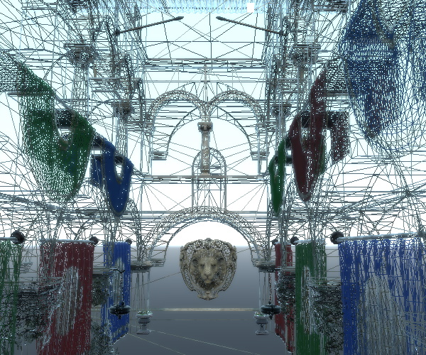
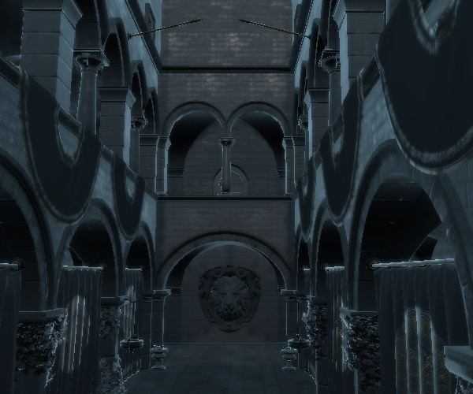
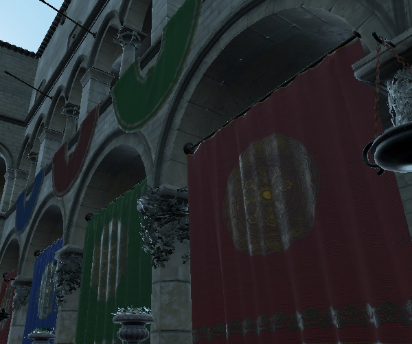

SceneEnvironment QML Type
Lets you configure how a scene is rendered. More...
| Import Statement: | import QtQuick3D |
| Inherits: | |
| Inherited By: |
Properties
- antialiasingMode : enumeration
- antialiasingQuality : enumeration
- aoBias : float
- aoDistance : float
- aoDither : bool
- aoEnabled : bool
(since 6.5) - aoSampleRate : int
- aoSoftness : float
- aoStrength : float
- backgroundMode : enumeration
- clearColor : color
- debugSettings : QtQuick3D::DebugSettings
(since 6.5) - depthPrePassEnabled : bool
- depthTestEnabled : bool
- effects : List<QtQuick3D::Effect>
- fog : QtQuick3D::Fog
(since 6.5) - lightProbe : QtQuick3D::Texture
- lightmapper : Lightmapper
- probeExposure : float
- probeHorizon : float
- probeOrientation : vector3d
- scissorRect : rect
(since 6.5) - skyBoxCubeMap : QtQuick3D::CubeMapTexture
(since 6.4) - skyboxBlurAmount : float
(since 6.4) - specularAAEnabled : bool
(since 6.4) - temporalAAEnabled : bool
- temporalAAStrength : float
- tonemapMode : enumeration
(since 6.0)
Detailed Description
SceneEnvironment defines a set of global properties for how a scene should be rendered.
Note: The QtQuick3D.Helpers module offers an ExtendedSceneEnvironment type which inherits from SceneEnvironment and adds a number of built-in effects on top.
To use SceneEnvironment or ExtendedSceneEnvironment, associate the environment property of a View3D with an instance of these types. The object can be declared inline, for example like this:
View3D { environment: SceneEnvironment { antialiasingMode: SceneEnvironment.MSAA tonemapMode: SceneEnvironment.TonemapModeFilmic backgroundMode: SceneEnvironment.SkyBox lightProbe: Texture { source: "panoramic_hdri_background.hdr" } } }
Alternatively, the environment object can be defined separately. It can then be referenced by one or more View3D objects. An example code snippet, using ExtendedSceneEnvironment this time:
ExtendedSceneEnvironment {
id: myEnv
vignetteEnabled: true
}
View3D {
width: parent.width / 2
environment: myEnv
}
View3D {
width: parent.width / 2
x: parent.width / 2
environment: myEnv
}
Feature Overview
- Anti-aliasing settings. See Anti-Aliasing Best Practices for an overview of this topic. The relevant properties are antialiasingMode, antialiasingQuality, specularAAEnabled, temporalAAEnabled, temporalAAStrength. In addition, if ExtendedSceneEnvironment is used, another method is available via fxaaEnabled.
- Screen space ambient occlusion. The relevant properties are aoEnabled, aoStrength, aoBias, aoDistance, aoDither, aoSampleRate, aoSoftness.
- Clear color, skybox, image-based lighting. For more information on IBL, see Using Image-Based Lighting. The relevant properties are backgroundMode, clearColor, lightProbe, probeExposure, probeHorizon, probeOrientation, skyboxBlurAmount, skyBoxCubeMap.
- Tonemapping. tonemapMode configures the tonemapping method that is used to convert the high dynamic range color values to the 0-1 range at the end of the graphics pipeline. ExtendedSceneEnvironment offers a few additional properties, such as whitePoint and sharpnessAmount that can be used to tune the tonemapping calculations.
- Depth buffer settings. The relevant properties are depthPrePassEnabled, depthTestEnabled.
- Post-processing effects. In addition to the built-in post-processing effects provided by ExtendedSceneEnvironment, applications can provide their own custom effects via the Effect type. The effects property is a list of Effect instances.
- Debug visualization settings, such as wireframe mode or rendering only certain color contributions for the materials. This is controlled by the DebugSettings object referenced from the debugSettings property. Most of these settings can also be controlled interactively when a DebugView item is added to the scene.
- Fog settings. To enable fog, set an appropriately configured Fog object in the fog property.
- Lightmap baking settings. When pre-baked lightmaps are used for some models in the scene, the Lightmapper object set in the lightmapper property defines the settings used during the baking process.
- Scissor settings. To apply a scissor different than the viewport, set the scissorRect property.
See also ExtendedSceneEnvironment.
Property Documentation
antialiasingMode : enumeration |
This property controls the antialiasing mode that is applied when rendering the scene.
Possible values are:
| Constant | Description |
|---|---|
SceneEnvironment.NoAA | No antialiasing is applied. |
SceneEnvironment.SSAA | Supersample antialiasing is applied. |
SceneEnvironment.MSAA | Multisample antialiasing is applied. |
SceneEnvironment.ProgressiveAA | Progressive antialiasing is applied. |
The default value is SceneEnvironment.NoAA.
Supersampling
The scene is rendered in a higher resolution, and then scaled down to actual resolution.
Pros: High quality. Antialiases all scene content and not just geometry silhouettes.
Cons: Usually more expensive than MSAA. Increases video memory usage. Supported with View3D items with all renderMode except Inline, but since the technique implies rendering to a texture first, enabling SSAA with a renderMode of Underlay or Overlay will result in using an intermediate texture and render pass that would normally not be needed, meaning the performance costs may be more noticeable. It is recommended to use SSAA only when the renderMode is the default Offscreen.
Multisampling
The edges of geometry are super-sampled, resulting in smoother silhouettes. This technique has no effect on the materials inside geometry, however.
Pros: Works with any View3D item regardless of the renderMode. Good results on geometry silhouettes, where aliasing is often most noticeable; works with fast animation without issues. Performance depends purely on the system's (GPU) capabilities.
Cons: Does not help with texture or reflection issues. Increases video memory usage. Can be expensive to use on less powerful graphics hardware. Can be controlled on a per-window basis or for individual View3D items depending on the renderMode. When using Underlay/Overlay with an effect applied or Offscreen, MSAA can be controlled for each View3D item. On the other hand, using Underlay/Overlay without any effect or Inline will make MSAA controlled per-window.
Note: For View3D items with a renderMode other than Underlay/Overlay with effects or Offscreen, multisampling can only be enabled via the QSurfaceFormat of the QQuickWindow or QQuickView. This will then affect all content, both 2D and 3D, in that window.
Progressive antialiasing
This property enables and sets the level of progressive antialiasing applied to the scene.
When all content of the scene has stopped moving, the camera is jiggled very slightly between frames, and the result of each new frame is blended with the previous frames. The more frames you accumulate, the better looking the result.
Pros: Provides great results when all content in the scene is standing still.
Cons: Does not take effect if any visual changes are occurring. Expensive due to having to accumulate and blend. Increases video memory usage.
See Anti-Aliasing Best Practices for further discussion on anti-aliasing methods.
antialiasingQuality : enumeration |
This property sets the level of antialiasing applied to the scene. Behavior depends on used antialiasingMode. With antialiasingMode property set to NoAA this property doesn't have an effect.
Possible values are:
| Constant | Description |
|---|---|
SceneEnvironment.Medium | SSAA: Antialiasing uses 1.2x supersampling resolution. MSAA: Antialiasing uses 2 samples per pixel. ProgressiveAA: Antialiasing uses 2 frames for final image. |
SceneEnvironment.High | SSAA: Antialiasing uses 1.5x supersampling resolution. MSAA: Antialiasing uses 4 samples per pixel. ProgressiveAA: Antialiasing uses 4 frames for final image. |
SceneEnvironment.VeryHigh | SSAA: Antialiasing uses 2.0x supersampling resolution. MSAA: Antialiasing uses 8 samples per pixel. ProgressiveAA: Antialiasing uses 8 frames for final image. |
The default value is SceneEnvironment.High
aoBias : float |
This property defines a cutoff distance preventing objects from exhibiting ambient occlusion at close distances. Higher values increase the distance required between objects before ambient occlusion is seen.
Note: If you see ambient occlusion shadowing on objects where there should be no shadowing, increase the value slightly to clip away close results.
The default value is 0.0.
aoDistance : float |
This property defines roughly how far ambient occlusion shadows spread away from objects. Greater distances cause increasing impact to performance.
The default value is 5.0.
Pictured here with the default aoSoftness and the maximum aoStrength:
| aoDistance of 5 | aoDistance of 1 |
|---|---|
Note: Getting visually good-looking screen space ambient occlusion is dependent on carefully tuning a number of related parameters, such as aoStrength, aoSoftness, aoDistance, aoDither, aoBias, and aoSampleRate.
See also aoStrength and aoSoftness.
aoDither : bool |
When this property is enabled it scatters the edges of the ambient occlusion shadow bands to improve smoothness (at the risk of sometimes producing obvious patterned artifacts).
Note: Very large distances between the clipping planes of your camera may cause problems with ambient occlusion. If you are seeing odd banding in your ambient occlusion, try adjusting the clipFar property of your camera to be closer to your content.
The default value is false.
See also PerspectiveCamera.clipFar and OrthographicCamera.clipFar.
aoEnabled : bool |
Enable or disable ambient occlusion.
The default value is false, which means ambient occlusion is disabled.
Note: If aoStrength or aoDistance is 0, then setting this property to true will also set those values appropriately to make the ambient occlusion effective.
Note: Getting visually good-looking screen space ambient occlusion is dependent on carefully tuning a number of related parameters, such as aoStrength, aoSoftness, aoDistance, aoDither, aoBias, and aoSampleRate.
This property was introduced in Qt 6.5.
See also aoStrength and aoDistance.
aoSampleRate : int |
This property defines ambient occlusion quality (more shades of gray) at the expense of performance.
The value must be 2, 3, or 4. The default value is 2.
aoSoftness : float |
This property defines how smooth the edges of the ambient occlusion shading are.
The value must be between 0.0 and 50.0. The default value is 50.0.
Pictured here with the default aoDistance and the maximum aoStrength:
| aoSoftness of 50 | aoSoftness of 25 |
|---|---|
Note: Getting visually good-looking screen space ambient occlusion is dependent on carefully tuning a number of related parameters, such as aoStrength, aoSoftness, aoDistance, aoDither, aoBias, and aoSampleRate.
See also aoStrength and aoDistance.
aoStrength : float |
This property defines the amount of ambient occulusion applied. Ambient occulusion is a form of approximated global illumination which causes non-directional self-shadowing where objects are close together. A value of 100 causes full darkness shadows; lower values cause the shadowing to appear lighter. A value of 0 disables ambient occlusion entirely, improving performance at a cost to the visual realism of 3D objects rendered in the scene.
All values other than 0 have the same impact to the performance.
The default value is 0.0. The maximum value is 100.0.
A value of 0 is equivalent to setting aoEnabled to false.
Pictured here with the default aoSoftness and aoDistance:
| aoStrength of 0 (AO disabled) | aoStrength of 100 | aoStrength of 50 |
|---|---|---|
Note: Getting visually good-looking screen space ambient occlusion is dependent on carefully tuning a number of related parameters, such as aoStrength, aoSoftness, aoDistance, aoDither, aoBias, and aoSampleRate.
See also aoEnabled, aoDistance, and aoSoftness.
backgroundMode : enumeration |
This property controls if and how the background of the scene should be cleared.
Note: The clearing of the color buffer backing the View 3D does not always happen: depending on the renderMode property the View3D may not perform any clearing on its own, in which case SceneEnvironment.Transparent and SceneEnvironment.Color have no effect. Only the default Offscreen render mode (rendering into a texture) supports all clearing modes. With the Underlay mode, use QQuickWindow::setColor() or Window.color to control the clear color for the Qt Quick scene. SkyBox is handled differently, as it implies drawing actual geometry, so that works identically across all render modes.
| Constant | Description |
|---|---|
SceneEnvironment.Transparent | The scene is cleared to be transparent. This is useful to render 3D content on top of another item. This mode has no effect when the View3D is using a renderMode of Underlay or Overlay without any post processing enabled. |
SceneEnvironment.Color | The scene is cleared with the color specified by the clearColor property. This mode has no effect when the View3D is using a renderMode of Underlay or Overlay without any post processing enabled. |
SceneEnvironment.SkyBox | The scene will not be cleared, but instead a SkyBox or Skydome will be rendered. The SkyBox is defined using the HDRI map defined in the lightProbe property. |
SceneEnvironment.SkyBoxCubeMap | The scene will not be cleared, but instead a SkyBox or Skydome will be rendered. The SkyBox is defined using the cubemap defined in the skyBoxCubeMap property. |
The default value is SceneEnvironment.Transparent
Take the following example. The Suzanne model is expected to be pre-processed with the balsam tool and is sourced from the glTF Sample Models repository.
import QtQuick import QtQuick3D import QtQuick3D.Helpers Item { width: 1280 height: 720 View3D { id: v3d anchors.fill: parent environment: ExtendedSceneEnvironment { backgroundMode: SceneEnvironment.SkyBox lightProbe: Texture { source: "00455_OpenfootageNET_field_low.hdr" } glowEnabled: true glowStrength: 1.25 glowBloom: 0.25 glowBlendMode: ExtendedSceneEnvironment.GlowBlendMode.Additive } DirectionalLight { } Suzanne { scale: Qt.vector3d(50, 50, 50) z: -500 } PerspectiveCamera { id: camera } WasdController { controlledObject: camera } } }
Using image-based lighting in additional to the DirectionalLight and also using the light probe texture as the skybox gives us the following:
What happens if there is no light probe?
backgroundMode: SceneEnvironment.Transparent
Here the background is provided not by the View3D but by the QQuickWindow or QQuickView hosting the 2D and 3D scene. Lighting is based on the DirectionalLight only.
Using a fixed clear color:
backgroundMode: SceneEnvironment.Color clearColor: "green"
See also lightProbe, QQuickWindow::setColor(), Window::color, and View3D.
clearColor : color |
This property defines which color will be used to clear the viewport when using SceneEnvironment.Color for the backgroundMode property.
The default value is Qt::black
See also backgroundMode.
debugSettings : QtQuick3D::DebugSettings |
This property specifies a DebugSettings object which is used to configure the debugging tools of the renderer. During construction the SceneEnvironment automatically creates a DebugSettings object associated with itself, and therefore setting a custom DebugSettings is usually not required.
An example of rendering the scene with wireframe mode enabled:

Visualizing the normal vectors of the meshes:

Visualizing the specular lighting contribution:

This property was introduced in Qt 6.5.
See also DebugSettings.
depthPrePassEnabled : bool |
When enabled, the renderer performs a Z-prepass for opaque objects, meaning it renders them with a simple shader and color write disabled in order to get the depth buffer pre-filled before issuing draw calls for the main rendering passes.
This can improve performance depending on the scene contents. It is typically scenes with lots of overlapping objects and expensive fragment shading that benefit from this. At the same time, it is worth noting that the renderer performs front to back sorting for opaque objects, which in itself helps reducing unnecessary fragment shading, and therefore the Z-prepass does not always bring significant improvements.
On GPUs that use a tiled rendering architecture, which is common in mobile and embedded systems, it is recommended to set this to false.
The default value is false.
Note: This property has no effect when depth testing is disabled.
depthTestEnabled : bool |
The default value is true. By default the renderer classifies the objects in the scene either as opaque or as semi-transparent. The objects (sub-meshes with the associated material) in the opaque list are rendered first, with depth testing and depth write enabled, providing optimal Z-culling for typical 3D objects that have no semi-transparent regions. The objects in the semi-transparent list are rendered with depth write disabled, although still with depth testing enabled (to test against the opaque objects), in back to front order (sorted based on their center point's distance from the camera). This allows correct blending ("see through") for 3D objects that involve semi-transparent regions on their surface, either due to the node opacity or due to some color or texture map in the material.
When this property is set to false, the Z-buffer is not written and tested against, the depth test is skipped, and all objects, including fully opaque ones, are rendered in one go, sorted back to front.
Setting this property to false should be rarely needed. It can be useful in scenes where it is known that there is little benefit in the two-round approach because either there are very few opaque objects, or they are transformed in a way that a single back to front sorted pass performs better.
Note: Setting this property to false may cause rendering errors in certain scenes. In addition, some features, such as shadows, ambient occlusion, SCREEN_TEXTURE and DEPTH_TEXTURE in custom materials and effects, will not behave correctly without enabling depth buffer usage.
Note: This flag has no control over the presence of a depth or depth-stencil buffer. Such buffers may still be allocated even when this is set to false.
effects : List<QtQuick3D::Effect> |
This property contains a list of post-processing effects that will be applied to the entire viewport. The result of each effect is fed to the next so the order is significant.
Note: For technical reasons, adding the same Effect node several times to the list is unsupported and will give unexpected results.
fog : QtQuick3D::Fog |
lightProbe : QtQuick3D::Texture |
This property defines an image used to light the scene, either instead of, or in addition to standard lights.
The image is preferably a high-dynamic range image or a pre-generated cubemap. Pre-baking provides significant performance improvements at run time, because no time is spent on filtering and mipmap generation. If the source is a .hdr or other image, the GPU-based pre-processing happens at run time after loading the image file, and that can be potentially time consuming, in particular on embedded and mobile hardware. Therefore, it is strongly recommended that applications pre-process .hdr images at latest at build time, as described here.
Note: Using a Texture with sourceItem is not supported in combination with this property. Pre-filtering of all mip levels for dynamic Qt Quick content is typically not reasonable in practice due to performance implications.
For more information on image-based lighting, see Using Image-Based Lighting.
Note: The light probe texture, when the property is set to a valid Texture, is used for lighting regardless of the backgroundMode. However, when backgroundMode is set to SceneEnvironment.SkyBox, the texture is also used to render the scene background as a skybox.
The examples below were generated with varying the backgroundMode in the environment of the following scene. The scene has no DirectionLight, PointLight, or SpotLight. All lighting is based on the panoramic HDRI image.
import QtQuick import QtQuick3D import QtQuick3D.Helpers Item { width: 1280 height: 720 View3D { id: v3d anchors.fill: parent environment: ExtendedSceneEnvironment { backgroundMode: SceneEnvironment.SkyBox lightProbe: Texture { source: "00455_OpenfootageNET_field_low.hdr" } tonemapMode: SceneEnvironment.TonemapModeFilmic sharpnessAmount: 0.4 glowEnabled: true glowStrength: 1.25 glowBloom: 0.25 glowBlendMode: ExtendedSceneEnvironment.GlowBlendMode.Additive } Node { scale: Qt.vector3d(100, 100, 100) Sponza { } Suzanne { y: 1 scale: Qt.vector3d(0.5, 0.5, 0.5) eulerRotation.y: -90 } } PerspectiveCamera { id: camera y: 100 } WasdController { controlledObject: camera } } }
Results with the above environment:
Switching the backgroundMode to SceneEnvironment.Transparent would give us:
Here the lighting of the 3D scene is the same as before, meaning the materials use the light probe in the lighting calculations the same way as before, but there is no skybox rendered. The background is white since that is the default clear color of the QQuickWindow hosting the 2D and 3D scene.
It is valid to set the lightProbe property value back to the default null. This unassigns the previously associated texture. For example, let's use the Delete key to dynamically toggle between image-based lighting with a skybox, and no image-based lighting with a fixed clear color for the background:
environment: ExtendedSceneEnvironment {
id: env
backgroundMode: SceneEnvironment.SkyBox
lightProbe: iblTex
tonemapMode: SceneEnvironment.TonemapModeFilmic
sharpnessAmount: 0.4
glowEnabled: true
glowStrength: 1.25
glowBloom: 0.25
glowBlendMode: ExtendedSceneEnvironment.GlowBlendMode.Additive
}
Texture {
id: iblTex
source: "00455_OpenfootageNET_field_low.hdr"
}
focus: true
Keys.onDeletePressed: {
if (env.backgroundMode == SceneEnvironment.SkyBox) {
env.backgroundMode = SceneEnvironment.Color;
env.clearColor = "green";
env.lightProbe = null;
} else {
env.backgroundMode = SceneEnvironment.SkyBox;
env.lightProbe = iblTex;
}
}
Pressing Delete gives the following result. Remember that the scene used here has no lights so all 3D models appear completely black.

While lightProbe is commonly used in combination with Texture instances that source their data from an image file (typically .hdr or .ktx), it can also makes sense to associate with a Texture that uses in-memory, procedurally generated image data. A prime example of this is a Texture where the image data is generated by ProceduralSkyTextureData from the QtQuick3D.Helpers module:
backgroundMode: SceneEnvironment.SkyBox
lightProbe: Texture {
textureData: ProceduralSkyTextureData {
}
}
This gives us a procedurally generated HDR skybox texture that is now used both as the skybox and for image-based lighting:

See also backgroundMode, Using Image-Based Lighting, Pre-generating IBL cubemap, probeExposure, probeHorizon, probeOrientation, and ProceduralSkyTextureData.
lightmapper : Lightmapper |
When this property is set to a valid Lightmapper object, the settings specified by the object will be taken into account when baking lightmaps.
The default value is null, which means using default values for all the baking-related settings.
For more information on how to bake lightmaps, see the Lightmapper documentation.
When lightmaps are not relevant to an application and baked lighting is never generated, the property and the associated object serve no purpose in practice.
See also Model::usedInBakedLighting, Model::bakedLightmap, Light::bakeMode, and Lightmapper.
probeExposure : float |
This property modifies the amount of light emitted by the light probe. Part of the tonemapping is exposure mapping, and this property adjusts how the light values in the light probes get tonemaped.
By default exposure is set to is 1.0
Note: This property does not have an effect when tonemapMode is set to SceneEnvironment.TonemapModeNone.
See also lightProbe, probeHorizon, and probeOrientation.
probeHorizon : float |
This property when defined with increasing values adds darkness (black) to the bottom half of the environment, forcing the lighting to come predominantly from the top of the image (and removing specific reflections from the lower half). This property is useful for accounting for a ground plane that would have the effect of obscuring the reflection of the light probe from the ground. This is necessary because light probe contributions come directily from the image without consideration for the content of the scene.
The expected value range for the probeHorizon property is between 0.0 and 1.0. Any value outside of this range will be clamped to the expected range.
By default probeHorizon is set to 0.0 which means the whole light probe is used without adjustment.
Note: The probeHorizon property only affects materials lighting, and has no effect on the rendering of the sky box.
See also lightProbe, probeExposure, and probeOrientation.
probeOrientation : vector3d |
This property when defines the orientation of the light probe. Orientation is defined in terms of euler angles in degrees over the x, y, and z axes.
Note: This value augments how the lightProbe Texture is sampled in combination with any texture rotations and offsets set on the lightProbe texture.
See also lightProbe, probeHorizon, and probeExposure.
scissorRect : rect |
This property defines a scissor rectangle in view coordinates, with the top-left corner at [0, 0]
This property was introduced in Qt 6.5.
skyBoxCubeMap : QtQuick3D::CubeMapTexture |
This property defines a cubemap to be used as a skybox when the background mode is SkyBoxCubeMap.
This property was introduced in Qt 6.4.
skyboxBlurAmount : float |
This property determines how much much the skybox should be blurred when using SceneEnvironment.SkyBox for the backgroundMode property. The default value is 0.0 which means there is no blurring.
Acceptable values range between 0.0 and 1.0, all other values will be clamped to this range.
This property was introduced in Qt 6.4.
specularAAEnabled : bool |
When this property is enabled, specular aliasing will be mitigated. Specular aliasing is often visible in form of bright dots, possibly flickering when moving the camera around.
The default value is false.
| Specular AA disabled | Specular AA enabled |
|---|---|
|  |

This property was introduced in Qt 6.4.
temporalAAEnabled : bool |
When this property is enabled temporal antialiasing will be used.
The camera is jiggled very slightly between frames, and the result of each new frame is blended with the previous frame.
Note: Temporal antialiasing doesn't have an effect when antialiasingMode is MSAA.
Note: When combined with ProgressiveAA antialiasingMode, temporalAA is used when scene animates while ProgressiveAA is used once animations stop.
Pros: Due to the jiggling camera it finds real details that were otherwise lost; low impact on performance.
Cons: Fast-moving objects cause one-frame ghosting.
temporalAAStrength : float |
This property modifies the amount of temporal movement (antialiasing). This has an effect only when temporalAAEnabled property is true.
See also temporalAAEnabled.
tonemapMode : enumeration |
This property defines how colors are tonemapped before rendering. All rendering in Qt Quick 3D is performed in linear color space and can in many cases lead to generating color values that are not displayable. The tonemapMode determines the technique that is used to remap colors into a displayable range.
The default value is SceneEnvironment.TonemapModeLinear
| Constant | Description |
|---|---|
SceneEnvironment.TonemapModeNone | All Tonemapping is bypassed. This mode is useful when performing post processing effects. |
SceneEnvironment.TonemapModeLinear | Linear tonemapping is applied. Colors are gamma corrected and returned in sRGB color space. |
SceneEnvironment.TonemapModeAces | Academy Color Encoding System tonemapping is applied. |
SceneEnvironment.TonemapModeHejlDawson | Hejl-Dawson tonemapping is applied. |
SceneEnvironment.TonemapModeFilmic | Filmic tonemapping is applied. |
See ExtendedSceneEnvironment for an example of these different modes.
Note: When using post-processing effects, most effects expect untonemapped linear color data. With application-provided, custom effects implemented via the Effect type, it is important to know that starting with Qt 6.5 effects can safely assume that they work with linear color data, and tonemapping is performed automatically on the output of the last effect in the chain. If there is a need to customize tonemapping completely, consider setting the SceneEnvironment.TonemapModeNone value to disable the built-in tonemapper, and perform the appropriate adjustments on the color value in the last effect in the chain instead. This does not apply to the built-in effects of ExtendedSceneEnvironment, because those automatically take care of proper tonemapping regardless of what combination of built-in effects are enabled in the environment.
This property was introduced in Qt 6.0.